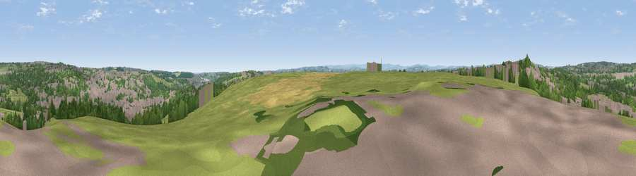

Viewpoint near Little Gomersal
#23033 in England · top 37% of its area beats it · near Little Gomersal · footpathWhere it is
The exact computed spot (SE 21575 25575). Click the marker for map links.
Public access: a public right of way passes within 50 m of this spot. Computed from Natural England's CRoW access layer and OpenStreetMap rights of way — not the legal definitive map. Always verify locally.
The view, rendered

A 360° render of this exact spot computed from the terrain model, tree cover and land cover — summer colours, afternoon light, calibrated against photographs of famous viewpoints. Real trees, hedges and buildings will differ in detail.
The panorama
Grey silhouette: terrain skyline in each direction (720 bearings, Earth curvature and refraction included). Dashed green: skyline with trees (+15 m) and buildings (+8 m) as obstacles. Blue strip: how far the ground is visible on each bearing.
Where the view opens
Wedge length = distance to the farthest visible ground on that bearing (vegetation-aware). Rings at 10, 25 and 50 km.
What fills the view
38% grassland · 29% built-up · 28% woodland · 5% cropland
Angular shares of the visible panorama (visual magnitude), not map area. Landscape diversity 0.54 (0–1 Shannon).
Key numbers
More beautiful places nearby
The staircase of upgrades: each row has a higher view potential than everything closer. Driving times are estimates from straight-line distance, calibrated against real road routing — check an actual route before setting out.
| Place | Direction | Drive | Score |
|---|---|---|---|
| Viewpoint near Birstall | SSE · 0 km | ~1 min | 54.2 |
| Viewpoint near Heckmondwike | SSE · 2 km | ~6 min | 57.6 |
| Viewpoint near Hartshead | SW · 4 km | ~9 min | 58.8 |
| Viewpoint near Woodkirk | E · 4 km | ~10 min | 62.1 |
| Viewpoint near Upper Hopton | SSW · 7 km | ~15 min | 63.3 |
| Viewpoint near Kirkheaton | SSW · 7 km | ~15 min | 68.0 |
| Viewpoint near Grange Moor | S · 10 km | ~19 min | 69.8 |
| Viewpoint near Stump Cross | W · 13 km | ~24 min | 71.5 |
53.72613, -1.67449 · source: screening · position refined by local search. Computed location — check access rights before visiting.